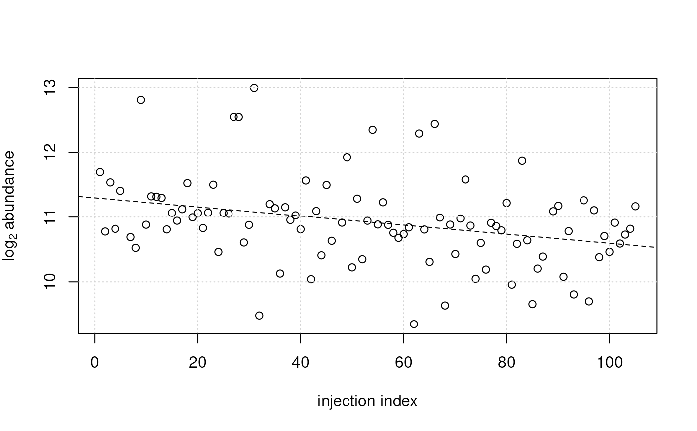

The fit_lm and adjust_lm functions facilitate linear model-based
normalization of abundance matrices. The expected noise in a numeric
data matrix can be modeled with a linear regression model using the
fit_lm function and the data can subsequently be adjusted using the
adjust_lm function (i.e., the modeled noise will be removed from the
abundance values). A typical use case would be to remove injection index
dependent signal drifts in a LC-MS derived metabolomics data:
a linear model of the form y ~ injection_index could be used to model
the measured abundances of each feature (each row in a data matrix) as a
function of the injection index in which a specific sample was measured
during the LC-MS measurement run. The fitted linear regression models
can subsequently be used to adjust the abundance matrix by removing
these dependencies from the data. This allows to perform signal
adjustments as described in (Wehrens et al. 2016).
The two functions are described in more details below:
fit_lm allows to fit a linear regression model (defined with parameter
formula) to each row of the numeric data matrix submitted with parameter
y. Additional covariates of the linear model defined in formula are
expected to be provided as columns in a data.frame supplied via
the data parameter.
The linear model is expected to be defined by a formula starting with
y ~ . To model for example an injection index dependency of values in
y a formula y ~ injection_index could be used, with values for the
injection index being provided as a column "injection_index" in the
data data frame. fit_lm would thus fit this model to each row of
y.
Linear models can be fitted either with the standard least squares of
lm() by setting method = "lm" (the default), or with the more robust
methods from the robustbase package with method = "lmrob".
adjust_lm can be used to adjust abundances in a data matrix y based
on linear regression models provided with parameter lm. Parameter lm
is expected to be a list of length equal to the number of rows of y,
each element being a linear model (i.e., a results from lm or lmrob).
Covariates for the model need to be provided as columns in a data.frame
provided with parameter data. The number of rows of that data.frame
need to match the number of columns of y. The function returns the
input matrix y with values in rows adjusted with the linear models
provided by lm. No adjustment is performed for rows for which the
respective element in lm is NA. See examples below for details or the
vignette for more examples, descriptions and information.
Arguments
- formula
formuladefining the model that should be fitted to the data. See alsolm()for more information. Formulas should begin withy ~as values in rows ofywill be defined as y. See description of thefit_lmfunction for more information.- data
data.framecontaining the covariates for the linear model defined byformula(forfit_lm) or used inlm(foradjust_lm). The number of rows has to match the number of columns ofy.- y
for
fit_lm:matrixof abundances on which the linear model pefined withformulashould be fitted. Foradjust_lm:matrixof abundances that should be adjusted using the models provided with parameterlm.- method
character(1)defining the linear regression function that should be used for model fitting. Can be eithermethod = "lm"(the default) for standard least squares model fitting ormethod = "lmrob"for a robust alternative defined in the robustbase package.- control
a
listspeficying control parameters forlmrob. Only used ifmethod = "lmrob". See help oflmrob.controlin therobustbasepackage for details. By defaultcontrol = NULLthe KS2014 settings are used and scale-finding iterations are increased to 10000.- minVals
numeric(1)defining the minimum number of non-missing values (per feature/row) required to perform the model fitting. For rows inyfor which fewer non-NAvalues are available no model will be fitted and aNAwill be reported instead.- model
logical(1)whether the model frame are included in the returned linear models. Passed to thelmorlmrobfunctions.- ...
for
fit_lm: additional parameters to be passed to the downstream calls tolmorlmrob. Foradjust_lm: ignored.- BPPARAM
parallel processing setup. See
bpparam()for more information. Parallel processing can improve performance especially formethod = "lmrob".- lm
listof linear models (as returned bylmorlmrob) such as returned by thefit_lmfunction. The length of the list is expected to match the number of rows ofy, i.e., each element should be a linear model to adjust the specific row, orNAto skip adjustment for that particular row iny.
Value
For `fit_lm`: a `list` with linear models (either of type *lm* or
*lmrob*) or length equal to the number of rows of `y`. `NA` is
reported for rows with too few non-missing data points (depending
on parameter `minValues`).
For `adjust_lm`: a numeric matrix (same dimensions as input matrix
`y`) with the values adjusted with the provided linear models.References
Wehrens R, Hageman JA, van Eeuwijk F, Kooke R, Flood PJ, Wijnker E, Keurentjes JJ, Lommen A, van Eekelen HD, Hall RD Mumm R and de Vos RC. Improved batch correction in untargeted MS-based metabolomics. Metabolomics 2016; 12:88.
Examples
## See also the vignette for more details and examples.
## Load a test matrix with abundances of features from a LC-MS experiment.
vals <- read.table(system.file("txt", "feature_values.txt",
package = "MetaboCoreUtils"), sep = "\t")
vals <- as.matrix(vals)
## Define a data.frame with the covariates to be used to model the noise
sdata <- data.frame(injection_index = seq_len(ncol(vals)))
## Fit a linear model describing the feature abundances as a
## function of the index in which samples were injected during the LC-MS
## run. We're fitting the model to log2 transformed data.
## Note that such a model should **only** be fitted if the samples
## were randomized, i.e. the injection index is independent of any
## experimental covariate. Alternatively, the injection order dependent
## signal drift could be estimated using QC samples (if they were
## repeatedly injected) - see vignette for more details.
ii_lm <- fit_lm(y ~ injection_index, data = sdata, y = log2(vals))
## The result is a list of linear models
ii_lm[[1]]
#>
#> Call:
#> lm(formula = formula, data = data, model = model)
#>
#> Coefficients:
#> (Intercept) injection_index
#> 14.833410 0.001587
#>
## Plotting the data for one feature:
plot(x = sdata$injection_index, y = log2(vals[2, ]),
ylab = expression(log[2]~abundance), xlab = "injection index")
grid()
## plot also the fitted model
abline(ii_lm[[2]], lty = 2)

## For this feature (row) a decreasing signal intensity with injection
## index was observed (and modeled).
## For another feature an increasing intensity can be observed.
plot(x = sdata$injection_index, y = log2(vals[3, ]),
ylab = expression(log[2]~abundance), xlab = "injection index")
grid()
## plot also the fitted model
abline(ii_lm[[3]], lty = 2)
## This trend can be removed from the data using the `adjust_lm` function
## by providing the linear models descring the drift. Note that, because
## we're adjusting log2 transformed data, the resulting abundances are
## also in log2 scale.
vals_adj <- adjust_lm(log2(vals), data = sdata, lm = ii_lm)
## Plotting the data before (open circles) and after adjustment (filled
## points)
plot(x = sdata$injection_index, y = log2(vals[2, ]),
ylab = expression(log[2]~abundance), xlab = "injection index")
points(x = sdata$injection_index, y = vals_adj[2, ], pch = 16)
grid()
## Adding the line fitted through the raw data
abline(ii_lm[[2]], lty = 2)
## Adding a line fitted through the adjusted data
abline(lm(vals_adj[2, ] ~ sdata$injection_index), lty = 1)
## After adjustment there is no more dependency on injection index.